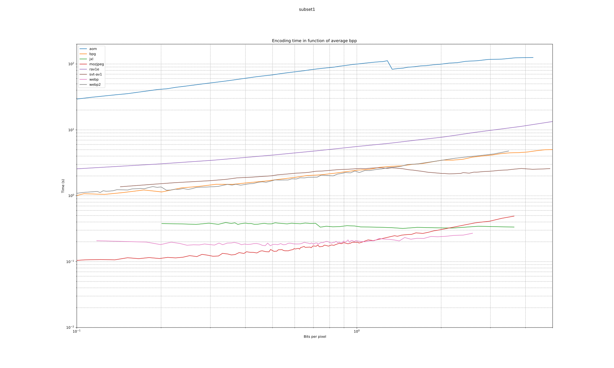

| format | avg_bpp | avg_compression_ratio | avg_space_saving | wavg_encode_time | wavg_decode_time | weissman_score |
|---|---|---|---|---|---|---|
| jxl | 10.093 | 1.3007 | 0.23120 | 22.648 | 3.3466 | 1.2555 |
| webp | 10.510 | 1.2492 | 0.19947 | 42.614 | 3.0936 | 1.1343 |
| webp2 | 10.397 | 1.2627 | 0.20805 | 68.266 | 5.8399 | 1.0980 |
| mozjpeg | 13.959 | 0.9405 | -0.06330 | 8.983 | 0.5001 | 1.0000 |
| bpg | 13.722 | 0.9567 | -0.04521 | 17.480 | 4.2157 | 0.9480 |
| aom | 11.530 | 1.1386 | 0.12175 | 648.088 | 4.9324 | 0.8236 |
